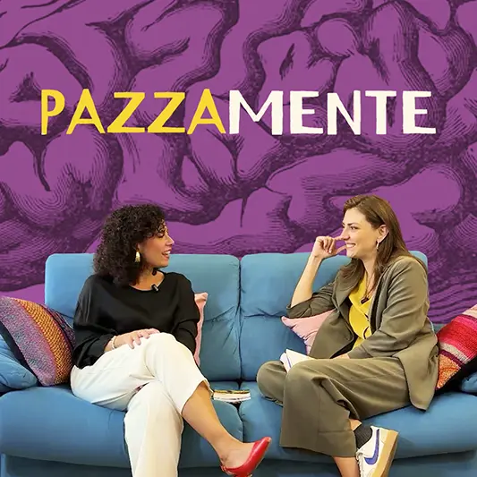
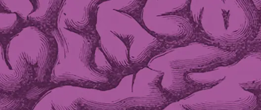
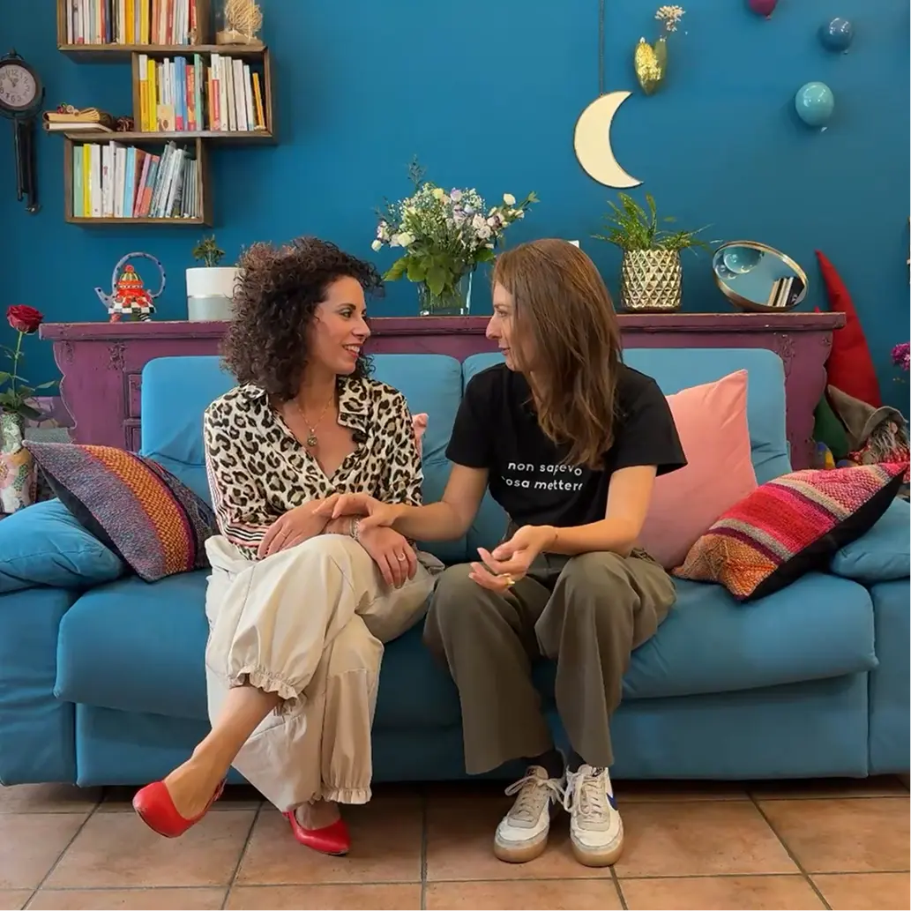
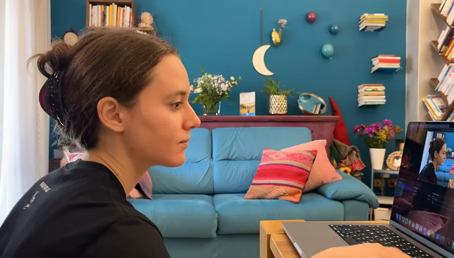
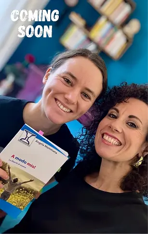
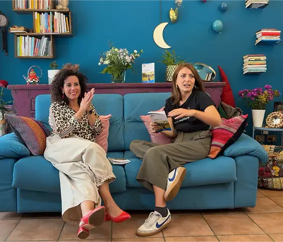
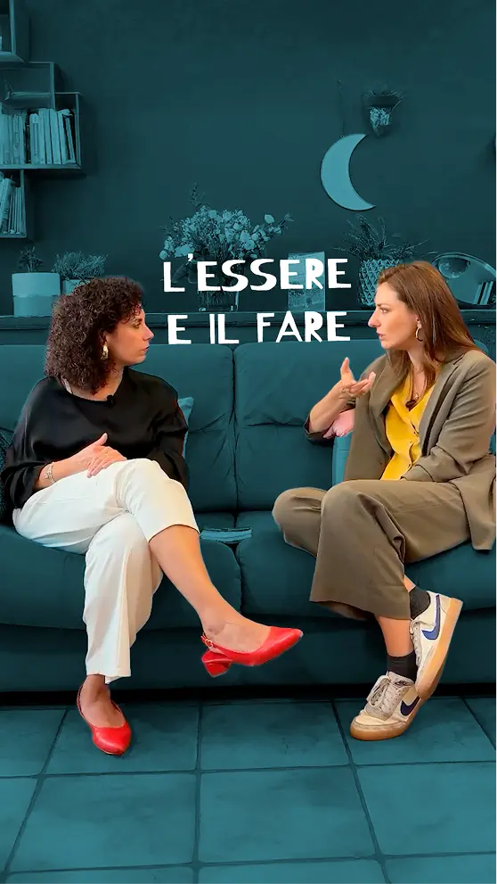
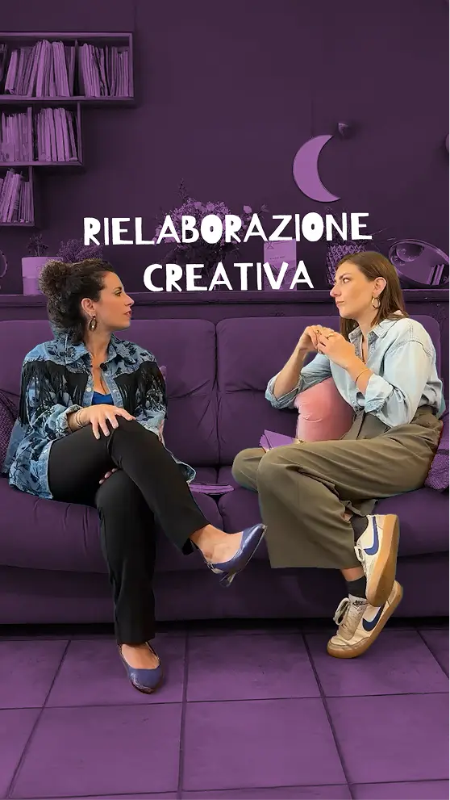
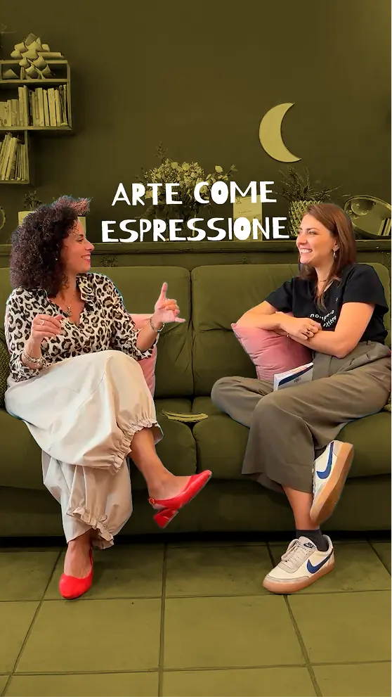

The problem
Mental health content in Italy tends to fall into one of two traps: it's either clinical and inaccessible, or it's so softened it stops being useful. There isn't much in between — and that gap is exactly where people who want to actually understand themselves get stuck.
The idea
Pazzamente lives in that in-between space — a place where psychology is taken seriously but talked about the way two friends talk on a couch. The show is hosted by Angela Mammana (psychologist, psychotherapist, and author) and Martina Gatto (TV presenter and actress), and I'm the one behind the camera — making it an all-women team of three.
Each episode begins from a theme rooted in Angela's book A modo mio — la libertà di essere, opens into a free-ranging conversation, and closes with a concrete tool the listener can actually use. The closing tip was a deliberate design decision — mental health content often leaves people with insight but no clear next step.
My role
Tools
- Figma
- Adobe Premiere Pro
- Adobe Illustrator
- Adobe Photoshop
The brand
The name Pazzamente is an Italian adverb meaning "madly" — but it splits into pazza (crazy) and mente (mind). The split isn't just wordplay: it captures exactly what the show is about — a mind taken seriously and celebrated at the same time.
The primary canvas is a deep saturated violet-purple — the colour of introspection and the psychological space the show inhabits. Against it, the yellow of PAZZA snaps with energy, creating the same productive contrast as the two hosts. A brain engraving texture runs through every touchpoint — vintage, a little curious, serious about psychology but not afraid to be playful.


The episodes
Every episode is filmed, directed, and edited by me. The visual language — couch setting, warm lighting, intimate two-shot framing — was a deliberate attempt to make the conversation feel like something you're overhearing rather than watching. No hard studio lighting, no formal framing, nothing that would signal "expert talking at you."




Three episodes are currently live, each exploring a different dimension of the book's central theme of identity and self-affirmation:
A modo mio
La libertà di essere
Where identity begins and how we learn to claim it.
Trasformazione
Ritrovare se stessi dopo una crisi
Finding yourself again after everything changes.
Esplorazione
Scoprirsi attraverso nuove esperienze
How new experiences reveal parts of ourselves we didn't know existed.
The social strategy was built around one principle: content should feel native to the platform, not like a repurposed clip dumped into a feed. Vertical cuts were edited as standalone moments — complete enough to make sense without the full episode, specific enough to send people looking for more.



Launched in November 2025 with no prior audience and no paid promotion. All growth is organic.
YouTube
51 subscribers · 9 Shorts + 3 full episodes
Top short: 1,007 views · Ep #1 avg view time: 4:56
85% of traffic from Shorts · 85% Italian audience
Spotify
26 followers · 30 streams per episode on average
Audience: 61% female · core age 28–44
93% Italian listeners · growing impressions in April 2026
Reflection
Pazzamente started as a commission and became something I genuinely care about — which is the best thing a project can do. Working on it clarified something important about what I find interesting in design: the moments where creative direction, production craft, and communication strategy are inseparable from each other.
The hardest creative problem was tone. On paper, a psychology podcast hosted by a psychotherapist and an actress could tip into either therapy-speak or entertainment fluff. Getting the balance right required a lot of decisions that don't show up anywhere in the final product: how long to let a silence run, when to cut away, which moments to turn into shorts and which to leave in the full episode only. Tone isn't just written — it's edited.
The most useful takeaway is that the tone IS the product. The warmth, the lightness, the sense that two people are genuinely talking rather than performing — that had to be designed as deliberately as the logo or the colour palette. You can't fix tone in post-production. It has to be built into the format, the set, the direction, and the editing rhythm from the start.